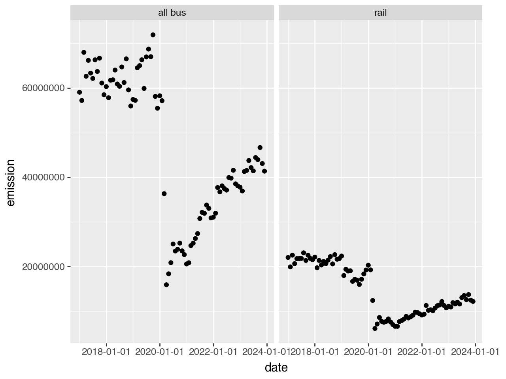
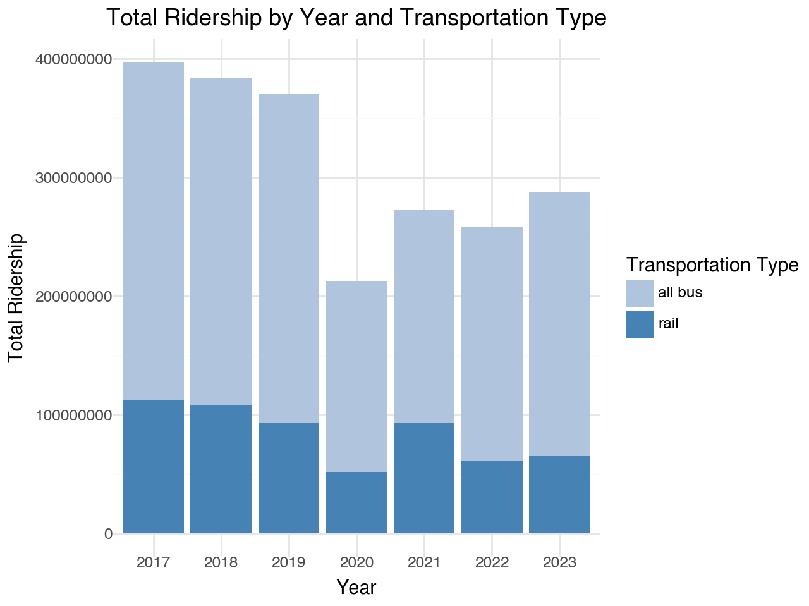
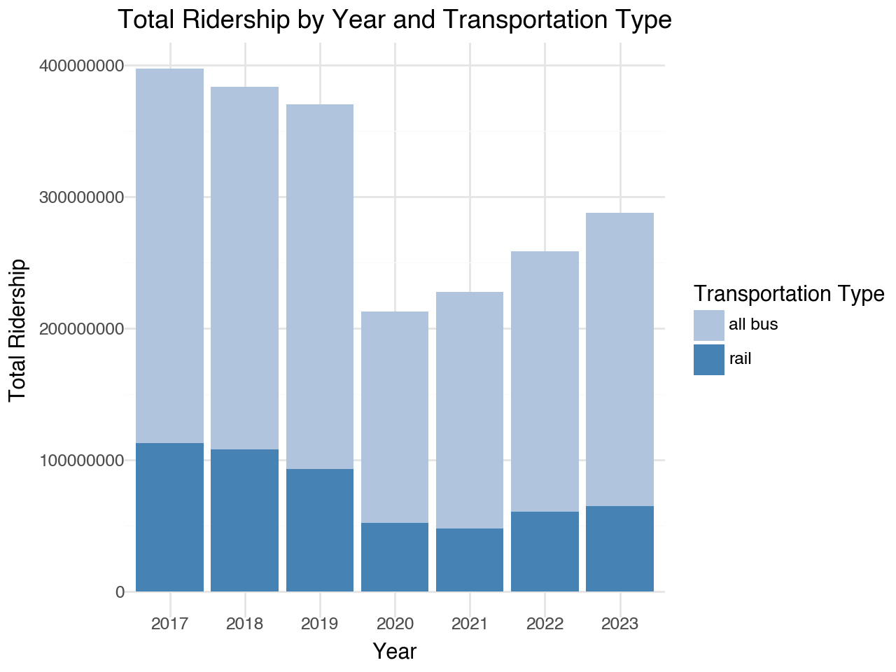
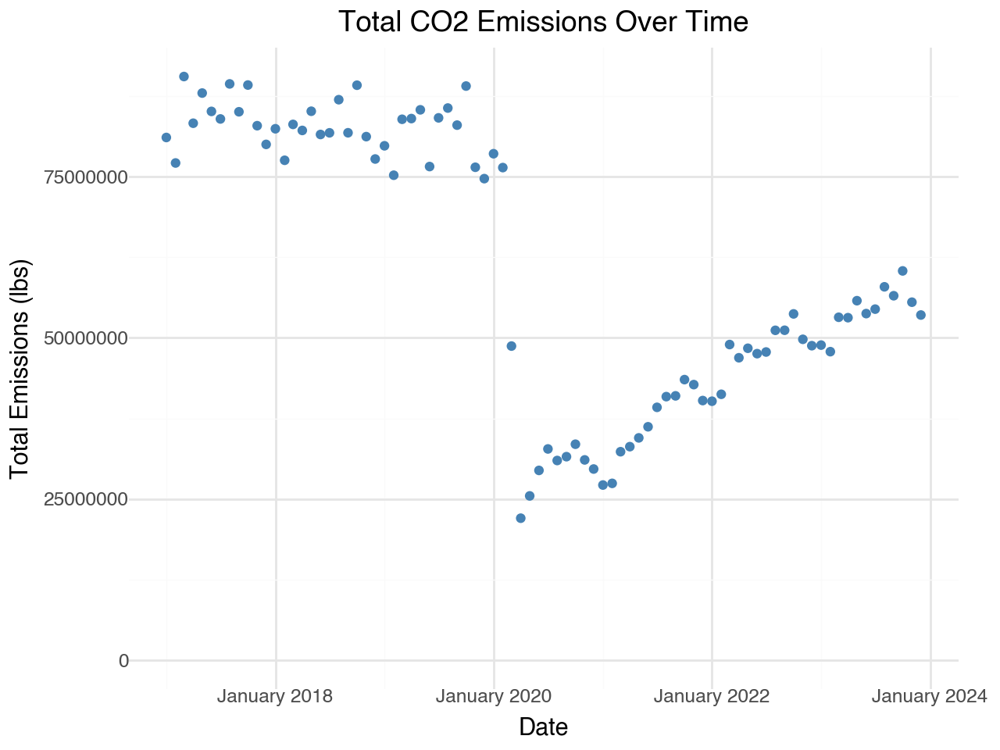
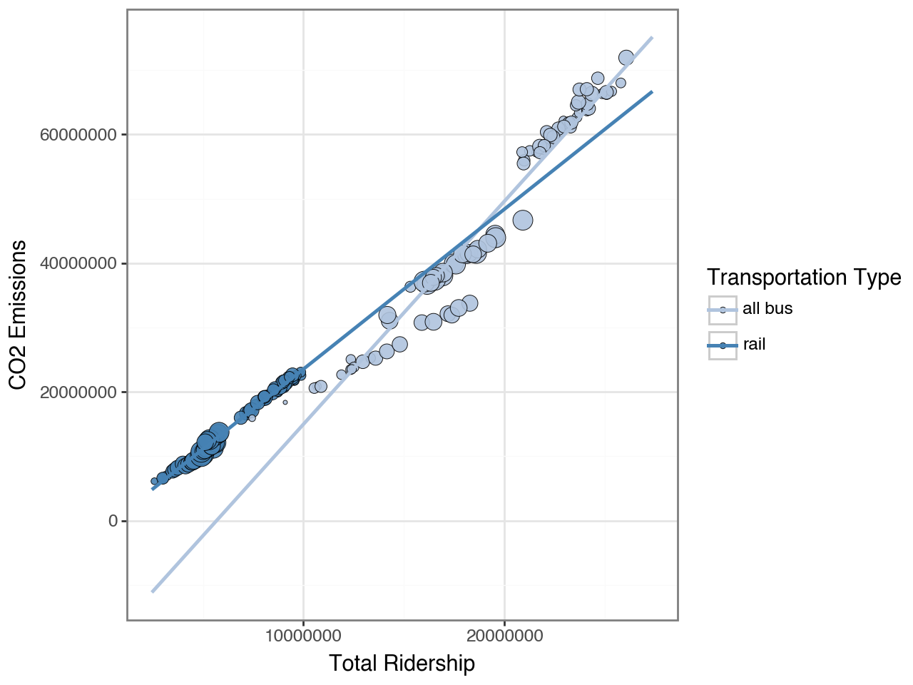
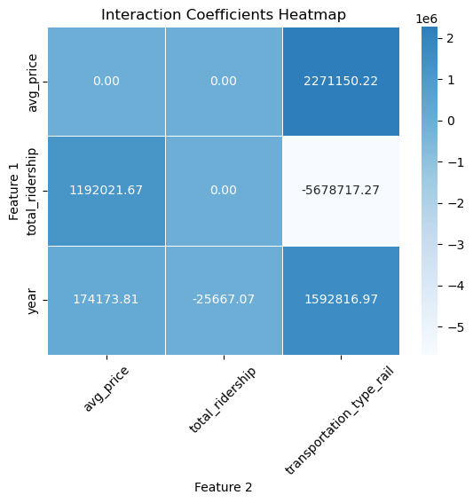

#packages
import pandas as pd
from plotnine import *
from matplotlib.dates import DateFormatter
data = pd.read_csv("/Users/stolieerickson/Documents/MSBA/Fall/GSB544-Computing/Project/data_clean.csv")
#date variable
data['date'] = pd.to_datetime(data[['year', 'month']].assign(day=1))Project
Part 1
(ggplot(data, aes(x = "date", y = "emission")) +
geom_point() +
facet_wrap("transportation_type")
)
plot = (
ggplot(data, aes(x='factor(year)', y='total_ridership', fill='transportation_type')) +
geom_bar(stat='identity') +
labs(title='Total Ridership by Year and Transportation Type',
x='Year',
y='Total Ridership',
fill='Transportation Type') +
scale_fill_manual(values=['lightsteelblue', 'steelblue']) +
theme_minimal()
)
# Display the plot
print(plot)<positron-console-cell-3>:13: FutureWarning: Using print(plot) to draw and show the plot figure is deprecated and will be removed in a future version. Use plot.show().
/opt/anaconda3/lib/python3.12/pprint.py:632: FutureWarning: Using repr(plot) to draw and show the plot figure is deprecated and will be removed in a future version. Use plot.show().
# Aggregate to get total emissions per month
monthly_emissions = data.groupby('date', as_index=False).agg(total_emission=('emission', 'sum'))
# Create the scatter plot with formatted date labels
(
ggplot(monthly_emissions, aes(x='date', y='total_emission')) +
geom_point(color="steelblue") +
labs(title='Total CO2 Emissions Over Time',
x='Date',
y='Total Emissions (lbs)') +
scale_x_date(date_labels='%B %Y') + # Format dates as "March 2018"
ylim(0, None) +
theme_minimal()
)

/opt/anaconda3/lib/python3.12/pprint.py:632: FutureWarning: Using repr(plot) to draw and show the plot figure is deprecated and will be removed in a future version. Use plot.show().Part 2
Bubble Plot
x: total ridership
y: emissions
color: bus/rail
size: average gas price
# Colors for transportation types
colors = {
'all bus': 'lightsteelblue',
'rail': 'steelblue'
}
# Creating the bubble plot with controlled regression line extension
(
ggplot(data, aes(x='total_ridership', y='emission', size='avg_price', fill='transportation_type'))
+ geom_point(alpha=0.9, color='black', stroke=0.2) # Bubble plot
+ geom_smooth(
aes(group='transportation_type', color='transportation_type'),
method='lm', se=False, fullrange=True # Extend regression lines
)
+ scale_fill_manual(
name='Transportation Type',
values=colors
)
+ scale_color_manual(
name='Transportation Type',
values=colors
)
+ labs(
x='Total Ridership',
y='CO2 Emissions (lbs)',
fill='Transportation Type'
)
+ guides(size=False) # Hides the size legend
+ xlim(
data['total_ridership'].min() * 0.95, # Slightly less than the minimum observed
data['total_ridership'].max() * 1.05 # Slightly more than the maximum observed
)
+ theme_bw()
)
/opt/anaconda3/lib/python3.12/pprint.py:632: FutureWarning: Using repr(plot) to draw and show the plot figure is deprecated and will be removed in a future version. Use plot.show().
Elastic Net Model
from sklearn.compose import ColumnTransformer
from sklearn.pipeline import Pipeline
from sklearn.preprocessing import StandardScaler, OneHotEncoder, PolynomialFeatures
from sklearn.linear_model import ElasticNet
from sklearn.model_selection import train_test_split
import pandas as pd
# Split the data
X = data[['year', 'transportation_type', 'total_ridership', 'avg_price']]
y = data['emission']
X_train, X_test, y_train, y_test = train_test_split(X, y, test_size=0.2, random_state=1)
# Define preprocessing
preprocessor = ColumnTransformer(
transformers=[
('num', StandardScaler(), ['year', 'total_ridership', 'avg_price']),
('cat', OneHotEncoder(drop='first'), ['transportation_type'])
]
)
# Create pipeline to add interactions
pipeline = Pipeline(steps=[
('preprocessor', preprocessor),
('interactions', PolynomialFeatures(degree=2, interaction_only=True, include_bias=False)), # Add interactions
('elasticnet', ElasticNet(random_state=1))
])
# Fit the pipeline
pipeline.fit(X_train, y_train)
# Get feature names after interactions
preprocessed_names = (
preprocessor.named_transformers_['num'].get_feature_names_out(['year', 'total_ridership', 'avg_price']).tolist()
+ preprocessor.named_transformers_['cat'].get_feature_names_out(['transportation_type']).tolist()
)
poly = pipeline.named_steps['interactions']
interaction_names = poly.get_feature_names_out(preprocessed_names)
# Extract coefficients
elasticnet_model = pipeline.named_steps['elasticnet']
coefficients = pd.DataFrame({
'Feature': interaction_names,
'Coefficient': elasticnet_model.coef_
})
# Debugging: Print all coefficients to confirm interactions exist
print("All Coefficients:")
print(coefficients)
# Adjust filter for interaction terms
interaction_terms = coefficients[coefficients['Feature'].str.contains(' ')]
# If interaction_terms is still empty, skip filtering
if interaction_terms.empty:
interaction_terms = coefficients
# Print interaction coefficients
print("Interaction Coefficients:")
print(interaction_terms)All Coefficients:
Feature Coefficient
0 year -2.134533e+06
1 total_ridership 1.008746e+07
2 avg_price -1.784773e+05
3 transportation_type_rail -3.616948e+06
4 year total_ridership -1.978626e+06
5 year avg_price 6.251893e+05
6 year transportation_type_rail -3.291138e+05
7 total_ridership avg_price -9.346049e+05
8 total_ridership transportation_type_rail 3.419450e+06
9 avg_price transportation_type_rail -6.011753e+05
Interaction Coefficients:
Feature Coefficient
4 year total_ridership -1.978626e+06
5 year avg_price 6.251893e+05
6 year transportation_type_rail -3.291138e+05
7 total_ridership avg_price -9.346049e+05
8 total_ridership transportation_type_rail 3.419450e+06
9 avg_price transportation_type_rail -6.011753e+05
All Coefficients:
Feature Coefficient
0 year -2.134533e+06
1 total_ridership 1.008746e+07
2 avg_price -1.784773e+05
3 transportation_type_rail -3.616948e+06
4 year total_ridership -1.978626e+06
5 year avg_price 6.251893e+05
6 year transportation_type_rail -3.291138e+05
7 total_ridership avg_price -9.346049e+05
8 total_ridership transportation_type_rail 3.419450e+06
9 avg_price transportation_type_rail -6.011753e+05
Interaction Coefficients:
Feature Coefficient
4 year total_ridership -1.978626e+06
5 year avg_price 6.251893e+05
6 year transportation_type_rail -3.291138e+05
7 total_ridership avg_price -9.346049e+05
8 total_ridership transportation_type_rail 3.419450e+06
9 avg_price transportation_type_rail -6.011753e+05/opt/anaconda3/lib/python3.12/pprint.py:632: FutureWarning: Using repr(plot) to draw and show the plot figure is deprecated and will be removed in a future version. Use plot.show().
Tuning Elastic Net
from sklearn.model_selection import GridSearchCV
# Define parameter grid for tuning
param_grid = {
'elasticnet__alpha': [0.001, 0.01, 0.1, 1, 10],
'elasticnet__l1_ratio': [0.1, 0.5, 0.9]
}
# Setup GridSearchCV
grid_search = GridSearchCV(pipeline, param_grid, cv=5, scoring='neg_mean_squared_error')
# Fit the grid search
grid_search.fit(X_train, y_train)
# Best parameters found by GridSearchCV
print("Best Hyperparameters Found:")
print(grid_search.best_params_)
# Use the best model
best_model = grid_search.best_estimator_
# Get coefficients from the best model
elasticnet_model_best = best_model.named_steps['elasticnet']
interaction_names_best = best_model.named_steps['interactions'].get_feature_names_out(preprocessed_names)
coefficients_best = pd.DataFrame({
'Feature': interaction_names_best,
'Coefficient': elasticnet_model_best.coef_
})
# Filter for significant interaction terms
interaction_terms_best = coefficients_best[coefficients_best['Feature'].str.contains(' ')]
print("Best Model's Interaction Coefficients:")
print(interaction_terms_best)/opt/anaconda3/lib/python3.12/site-packages/sklearn/linear_model/_coordinate_descent.py:678: ConvergenceWarning: Objective did not converge. You might want to increase the number of iterations, check the scale of the features or consider increasing regularisation. Duality gap: 2.352e+14, tolerance: 4.136e+12
/opt/anaconda3/lib/python3.12/site-packages/sklearn/linear_model/_coordinate_descent.py:678: ConvergenceWarning: Objective did not converge. You might want to increase the number of iterations, check the scale of the features or consider increasing regularisation. Duality gap: 1.854e+14, tolerance: 4.024e+12
/opt/anaconda3/lib/python3.12/site-packages/sklearn/linear_model/_coordinate_descent.py:678: ConvergenceWarning: Objective did not converge. You might want to increase the number of iterations, check the scale of the features or consider increasing regularisation. Duality gap: 1.905e+14, tolerance: 4.319e+12
/opt/anaconda3/lib/python3.12/site-packages/sklearn/linear_model/_coordinate_descent.py:678: ConvergenceWarning: Objective did not converge. You might want to increase the number of iterations, check the scale of the features or consider increasing regularisation. Duality gap: 2.139e+14, tolerance: 4.083e+12
/opt/anaconda3/lib/python3.12/site-packages/sklearn/linear_model/_coordinate_descent.py:678: ConvergenceWarning: Objective did not converge. You might want to increase the number of iterations, check the scale of the features or consider increasing regularisation. Duality gap: 2.381e+14, tolerance: 4.419e+12
/opt/anaconda3/lib/python3.12/site-packages/sklearn/linear_model/_coordinate_descent.py:678: ConvergenceWarning: Objective did not converge. You might want to increase the number of iterations, check the scale of the features or consider increasing regularisation. Duality gap: 2.213e+14, tolerance: 4.136e+12
/opt/anaconda3/lib/python3.12/site-packages/sklearn/linear_model/_coordinate_descent.py:678: ConvergenceWarning: Objective did not converge. You might want to increase the number of iterations, check the scale of the features or consider increasing regularisation. Duality gap: 1.703e+14, tolerance: 4.024e+12
/opt/anaconda3/lib/python3.12/site-packages/sklearn/linear_model/_coordinate_descent.py:678: ConvergenceWarning: Objective did not converge. You might want to increase the number of iterations, check the scale of the features or consider increasing regularisation. Duality gap: 1.758e+14, tolerance: 4.319e+12
/opt/anaconda3/lib/python3.12/site-packages/sklearn/linear_model/_coordinate_descent.py:678: ConvergenceWarning: Objective did not converge. You might want to increase the number of iterations, check the scale of the features or consider increasing regularisation. Duality gap: 2.053e+14, tolerance: 4.083e+12
/opt/anaconda3/lib/python3.12/site-packages/sklearn/linear_model/_coordinate_descent.py:678: ConvergenceWarning: Objective did not converge. You might want to increase the number of iterations, check the scale of the features or consider increasing regularisation. Duality gap: 2.223e+14, tolerance: 4.419e+12
/opt/anaconda3/lib/python3.12/site-packages/sklearn/linear_model/_coordinate_descent.py:678: ConvergenceWarning: Objective did not converge. You might want to increase the number of iterations, check the scale of the features or consider increasing regularisation. Duality gap: 2.081e+14, tolerance: 4.136e+12
/opt/anaconda3/lib/python3.12/site-packages/sklearn/linear_model/_coordinate_descent.py:678: ConvergenceWarning: Objective did not converge. You might want to increase the number of iterations, check the scale of the features or consider increasing regularisation. Duality gap: 1.548e+14, tolerance: 4.024e+12
/opt/anaconda3/lib/python3.12/site-packages/sklearn/linear_model/_coordinate_descent.py:678: ConvergenceWarning: Objective did not converge. You might want to increase the number of iterations, check the scale of the features or consider increasing regularisation. Duality gap: 1.634e+14, tolerance: 4.319e+12
/opt/anaconda3/lib/python3.12/site-packages/sklearn/linear_model/_coordinate_descent.py:678: ConvergenceWarning: Objective did not converge. You might want to increase the number of iterations, check the scale of the features or consider increasing regularisation. Duality gap: 2.030e+14, tolerance: 4.083e+12
/opt/anaconda3/lib/python3.12/site-packages/sklearn/linear_model/_coordinate_descent.py:678: ConvergenceWarning: Objective did not converge. You might want to increase the number of iterations, check the scale of the features or consider increasing regularisation. Duality gap: 2.065e+14, tolerance: 4.419e+12
/opt/anaconda3/lib/python3.12/site-packages/sklearn/linear_model/_coordinate_descent.py:678: ConvergenceWarning: Objective did not converge. You might want to increase the number of iterations, check the scale of the features or consider increasing regularisation. Duality gap: 3.288e+13, tolerance: 4.136e+12
/opt/anaconda3/lib/python3.12/site-packages/sklearn/linear_model/_coordinate_descent.py:678: ConvergenceWarning: Objective did not converge. You might want to increase the number of iterations, check the scale of the features or consider increasing regularisation. Duality gap: 1.395e+14, tolerance: 4.024e+12
/opt/anaconda3/lib/python3.12/site-packages/sklearn/linear_model/_coordinate_descent.py:678: ConvergenceWarning: Objective did not converge. You might want to increase the number of iterations, check the scale of the features or consider increasing regularisation. Duality gap: 1.529e+14, tolerance: 4.419e+12
/opt/anaconda3/lib/python3.12/site-packages/sklearn/linear_model/_coordinate_descent.py:678: ConvergenceWarning: Objective did not converge. You might want to increase the number of iterations, check the scale of the features or consider increasing regularisation. Duality gap: 2.771e+14, tolerance: 5.257e+12
/opt/anaconda3/lib/python3.12/pprint.py:632: FutureWarning: Using repr(plot) to draw and show the plot figure is deprecated and will be removed in a future version. Use plot.show().Best Hyperparameters Found:
{'elasticnet__alpha': 0.001, 'elasticnet__l1_ratio': 0.1}
Best Model's Interaction Coefficients:
Feature Coefficient
4 year total_ridership -2.566707e+04
5 year avg_price 1.741738e+05
6 year transportation_type_rail 1.592817e+06
7 total_ridership avg_price 1.192022e+06
8 total_ridership transportation_type_rail -5.678717e+06
9 avg_price transportation_type_rail 2.271150e+06
Best Hyperparameters Found:
{'elasticnet__alpha': 0.001, 'elasticnet__l1_ratio': 0.1}
Best Model's Interaction Coefficients:
Feature Coefficient
4 year total_ridership -2.566707e+04
5 year avg_price 1.741738e+05
6 year transportation_type_rail 1.592817e+06
7 total_ridership avg_price 1.192022e+06
8 total_ridership transportation_type_rail -5.678717e+06
9 avg_price transportation_type_rail 2.271150e+06
Interaction Heatmap
import seaborn as sns
import matplotlib.pyplot as plt
import numpy as np
# Extract interaction terms (those with spaces in their names)
interaction_terms_best = coefficients_best[coefficients_best['Feature'].str.contains(' ')]
# Split the interaction feature names into pairs of features
interaction_terms_best[['Feature1', 'Feature2']] = interaction_terms_best['Feature'].str.split(' ', expand=True)
# Pivot the interaction terms into a matrix format
interaction_matrix = interaction_terms_best.pivot_table(
index='Feature1',
columns='Feature2',
values='Coefficient',
aggfunc=np.mean, # In case of duplicates, average coefficients
fill_value=0 # Fill missing values with 0
)
# Print the interaction matrix for debugging
print("Interaction Coefficient Matrix:")
print(interaction_matrix)
# Apply the 'Blues' colormap for dark-to-light blue gradient
sns.heatmap(interaction_matrix, annot=True, cmap='Blues', center=0, fmt='.2f', linewidths=0.5)
# Customize the heatmap appearance
plt.title('Interaction Coefficients Heatmap')
plt.xlabel('Feature 2')
plt.ylabel('Feature 1')
# Rotate the x-axis labels by 45 degrees
plt.xticks(rotation=45)
# Display the plot
plt.show()<positron-console-cell-8>:9: SettingWithCopyWarning:
A value is trying to be set on a copy of a slice from a DataFrame.
Try using .loc[row_indexer,col_indexer] = value instead
See the caveats in the documentation: https://pandas.pydata.org/pandas-docs/stable/user_guide/indexing.html#returning-a-view-versus-a-copy
<positron-console-cell-8>:9: SettingWithCopyWarning:
A value is trying to be set on a copy of a slice from a DataFrame.
Try using .loc[row_indexer,col_indexer] = value instead
See the caveats in the documentation: https://pandas.pydata.org/pandas-docs/stable/user_guide/indexing.html#returning-a-view-versus-a-copy
<positron-console-cell-8>:12: FutureWarning: The provided callable <function mean at 0x104aa1c60> is currently using DataFrameGroupBy.mean. In a future version of pandas, the provided callable will be used directly. To keep current behavior pass the string "mean" instead.Interaction Coefficient Matrix:
Feature2 avg_price ... transportation_type_rail
Feature1 ...
avg_price 0.000000e+00 ... 2.271150e+06
total_ridership 1.192022e+06 ... -5.678717e+06
year 1.741738e+05 ... 1.592817e+06
[3 rows x 3 columns]
Interaction Coefficient Matrix:
Feature2 avg_price ... transportation_type_rail
Feature1 ...
avg_price 0.000000e+00 ... 2.271150e+06
total_ridership 1.192022e+06 ... -5.678717e+06
year 1.741738e+05 ... 1.592817e+06
[3 rows x 3 columns]
/opt/anaconda3/lib/python3.12/pprint.py:632: FutureWarning: Using repr(plot) to draw and show the plot figure is deprecated and will be removed in a future version. Use plot.show().